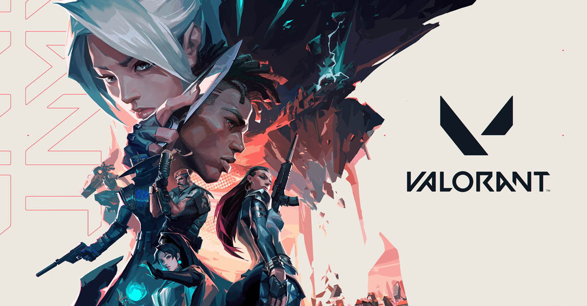
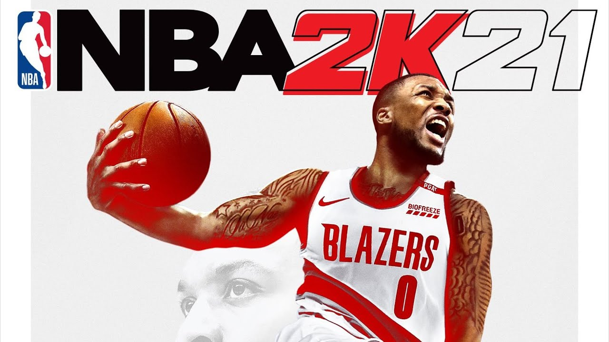
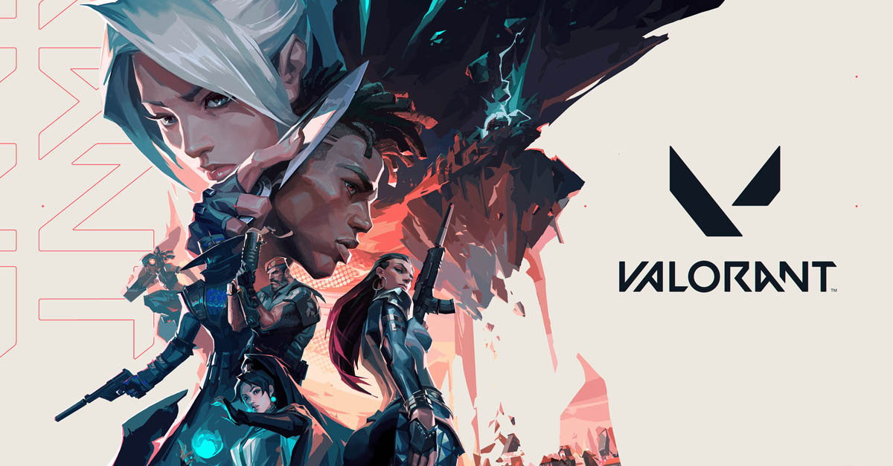
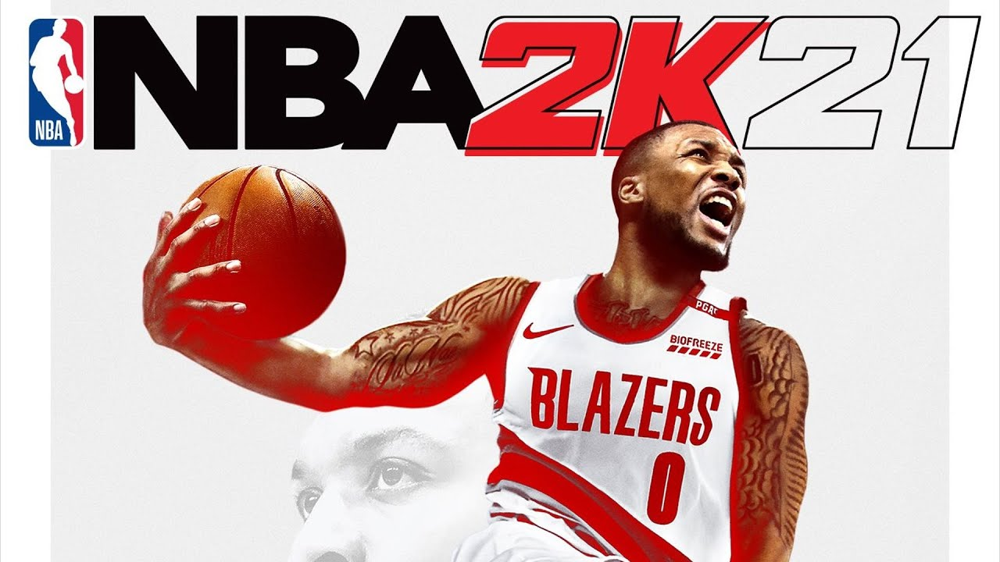

Hello I'm Justein Khryss J. Garcia
IT StudentGeneral Info
Birth Date: March 14, 2001
Address: Celina Homes 5 Brgy. Tagapo Sta. Rosa, Laguna
Email: jilljavierkhryss@gmail.com
Civil Status: Single
Current School: Polytechnic University of the Philippines - Sta. Rosa Branch
Hobbies
I have plenty of hobbies that I do. This includes listening to music and singing, editing videos, playing games, playing basketball, and making digital arts. All of this is sort of a leisure time whenever I don't have anything to do. I'll tackle them one by one for you.
Art
Ever since I was a child I like to draw especially anime. Then I learned about digital art, and since then I continued to make digital art as an hobby. It makes me feel like whenever I make digital art, it's like an escape from reality because I get to make an art that is unique and just out of this world. There is so much freedom whenever I make art and that is really what I want. I have samples of my art on Picture Gallery tab.
Music
Like drawing, I liked listening to music when I was at the very young age. I like pop, opm, jazz, rnb type of musics. Before that's all I do, just listening, didn't really have interest in singing until I was in highschool. I constantly just listen to every band I like and keep practicing to sing that song. My mom knows how to sing and she taught me some techniques on how to sing. I'm not that good at singing but I just love to sing because it was fun. I also have samples on Video Gallery tab.
Editing
This one I learned from watching videos on YouTube only. I just thought that editing videos is like making digital art. Of course you don't just wanna make plain videos, so, I also decided to try on editing videos. At first, it was so hard but then as I continue editing different videos I kinda know the easiest and fastest way though some really takes patience but it wasn't as hard as the first time. I continued to learn from watching tutorials on YouTube and it became of a hobby. I only edit videos I make when playing games, or my recordings of a song I made, or a cover. Maybe soon I could accept some commissions but as of now I'm not yet satisfied with my skills. Check out my samples on Video Gallery tab.
Games
I think most of us really like playing games. I am one of that group and I really enjoy playing games. Whenever I have time, I always play videogames. Ever since I got introduces to it when I was little, I got fascinated on how games works. It was also the reason why I took the course BSIT, I wanted to learn how to make a game. Below are my favorite games so far:
 



Sports
Playing basketball is also one of my hobbies. Just like playing videogames, I am also hooked on this sport. The big influenced for me is the NBA. It really taught me how to play basketball. Also watching Kobe Bryant how to play is really amazing. The pure skills is amazing. And his mentality is the best thing about him, working to be the best of all. I am a member in basketball team on my course and I am currently a Shooting Guard position.